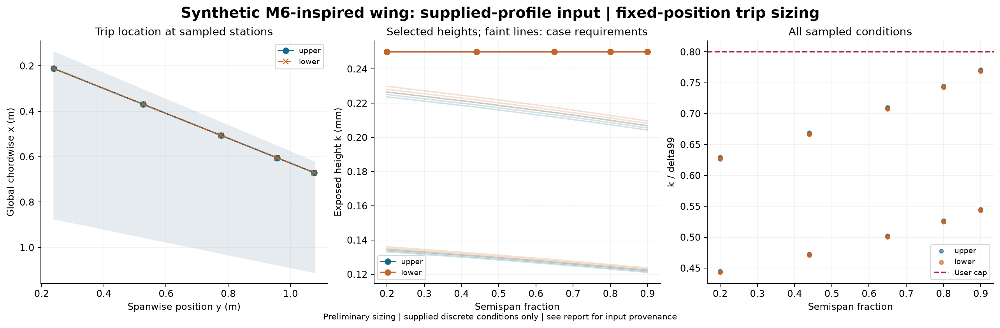

Status: feasible. SYNTHETIC example. Published M6-inspired planform only; Cp is an analytic mild-recovery curve and is not ONERA test data or CFD. Profiles are generated from the same Thwaites/quartic surrogate as the Cp route and are not independent validation. Surface distance is approximated by x_c times local chord. Initial theta uses an assumed linear stagnation-to-first-point velocity ramp.
Source: profiles; critical Re_k: 600.0; height multiplier: 1.1; k/delta99 cap: 0.8.
Calibration: Subsonic equiaxed distributed grit; NASA TN D-3579. Mach cap 0.95 is a tool guard.

| surface | eta | x_c | height_mm | status | reason |
|---|---|---|---|---|---|
| upper | 0.2 | 0.1 | 0.25 | feasible | |
| lower | 0.2 | 0.1 | 0.25 | feasible | |
| upper | 0.44 | 0.1 | 0.25 | feasible | |
| lower | 0.44 | 0.1 | 0.25 | feasible | |
| upper | 0.65 | 0.1 | 0.25 | feasible | |
| lower | 0.65 | 0.1 | 0.25 | feasible | |
| upper | 0.8 | 0.1 | 0.25 | feasible | |
| lower | 0.8 | 0.1 | 0.25 | feasible | |
| upper | 0.9 | 0.1 | 0.25 | feasible | |
| lower | 0.9 | 0.1 | 0.25 | feasible |
Whole-wing uniform-height alternative: {'status': 'feasible', 'height_mm': 0.25, 'reason': ''}
See per-condition results, design table, and full results and input hashes.